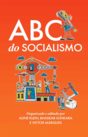

Playlist: ABC do Socialismo
O ótimo canal "Tempero Drag" passa por cada capítulo do ABCs do Socialismo em uma série de vídeos curtos e muito didádicos.
Sabrina Fernandes é Socióloga e Economista, possui PhD em Sociologia e Mestre em Economia Política pela Universidade Carleton no Canadá, onde escreveu sua tese premiada pela CALACS e pela própria Universidade Carleton com uma medalha do senado.
"Eles Vivem" (They Live), dirigido por John Carpenter e lançado em 1988, é um filme de ficção científica e horror que combina ação com uma crítica social aguda. A história segue John Nada, um trabalhador desempregado que chega a Los Angeles em busca de trabalho. Interpretado por Roddy Piper, Nada descobre um par de óculos de sol que revelam uma realidade oculta.
Autor: John Carpenter | Ano: 1988
"ABC do Socialismo" é um livro destinado a apresentar de forma clara e acessível os conceitos fundamentais do socialismo. O objetivo dos autores é desmistificar o socialismo e torná-lo compreensível para um público amplo, especialmente para aqueles que estão se aproximando dessas ideias pela primeira vez.
Autor: Mark Fisher | ISBN: 978-65-87233-09-3 | Ano: 2020

"ABC do Socialismo" é um livro destinado a apresentar de forma clara e acessível os conceitos fundamentais do socialismo. O objetivo dos autores é desmistificar o socialismo e torná-lo compreensível para um público amplo, especialmente para aqueles que estão se aproximando dessas ideias pela primeira vez.
Autores: Aline Klein, Bhaskar Sunkara, Victor Marques, Erik Olin Wright, Michael A. McCarthy, Joseph M. Schwartz, Keeanga-Yamahtta, Keeanga-Yamahtta Taylor, Alyssa Battistoni, Jonah Birch, Vivek Chibber, Danny Katch, Sofia Schurig, Marcelo Bamonte, Rhaysa Ruas, Adaner Usmani, Michael A. McCarthy e Nivedita Majumdar | ISBN-13: 978-6587233857 | Ano: 2022
"17 Contradições e o Fim do Capitalismo" é um livro do geógrafo e teórico social David Harvey, publicado em 2014. Nesta obra, Harvey explora as contradições internas do capitalismo, argumentando que elas são fundamentais para entender suas crises e potencial colapso. Ele divide as contradições em três categorias principais: fundacionais, em movimento e perigosas.
Autor: David Harvey SBN: 9788575595022
Famoso texto de "O Capital" sobre a formação do salário, preço e lucro.
Autor: Karl Marx
A proposta deste espaço é reunir materiais que expõe contradições do capitalismo e ajudar a formar um senso crítico de como funciona o atual sistema econômico e seus impactos no nosso cotidiano.